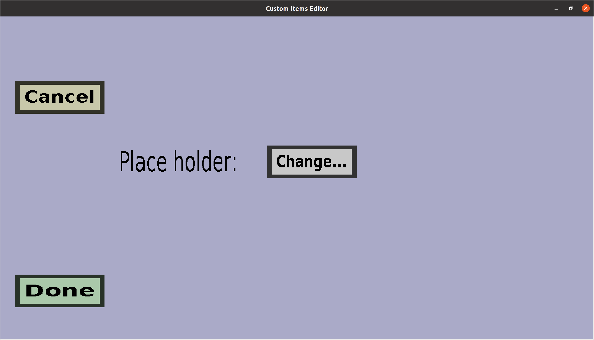

The storage slot menu can be used to configure a storage slot of a
custom container. Currently, only the placeholder can be
configured. This menu should look like this:

-
The 'Cancel' button will take you back to the container edit menu
you came from, without adding a new storage slot.
-
The 'Done' button will replace the original slot with a new storage
slot with the optional placeholder you chose. It will then take you
back to the container edit menu you came
from.
-
The Change... button on the right of Place holder:
can be used to choose the place holder of the new storage
slot. The place holder will be shown to players whenever the
slot is empty. Note that this is optional: if you don't
choose a place holder, players will simply see an empty slot
when the storage slot is empty. (Which is usually what you want.)